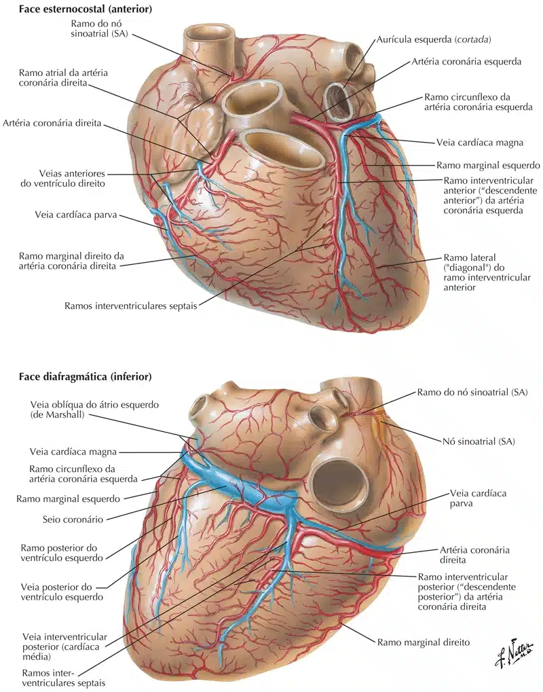
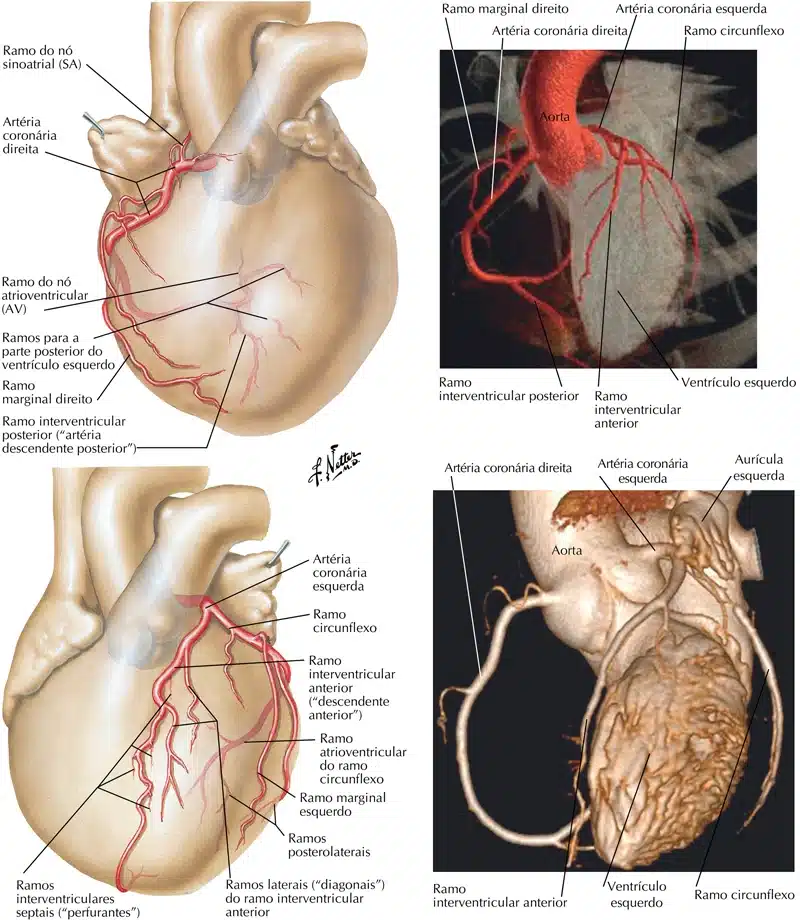
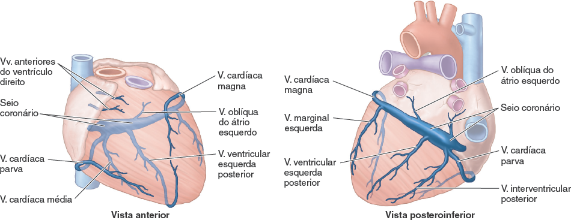
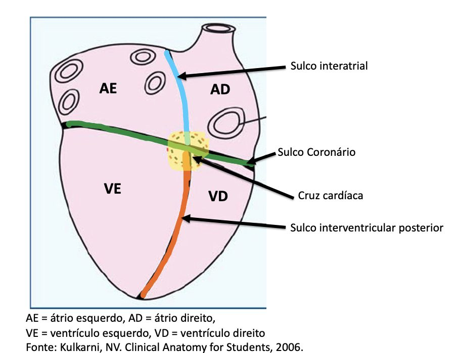
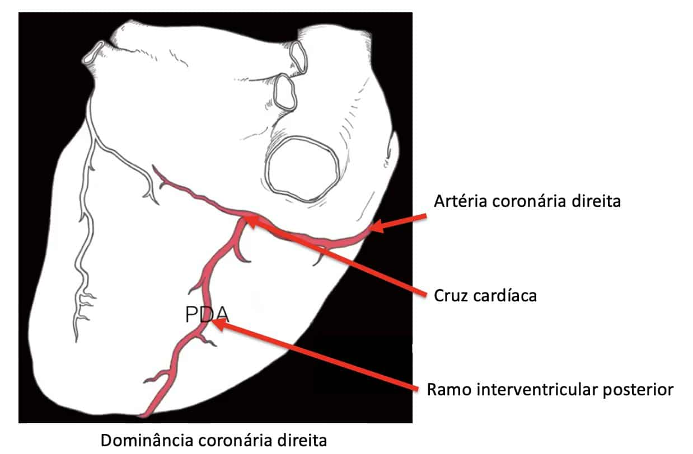
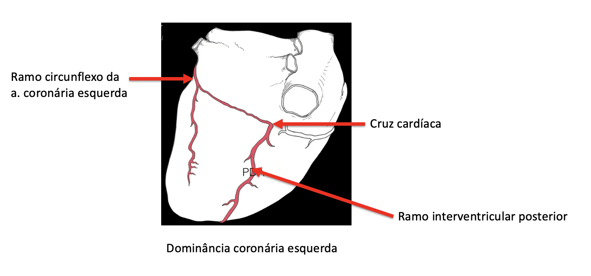
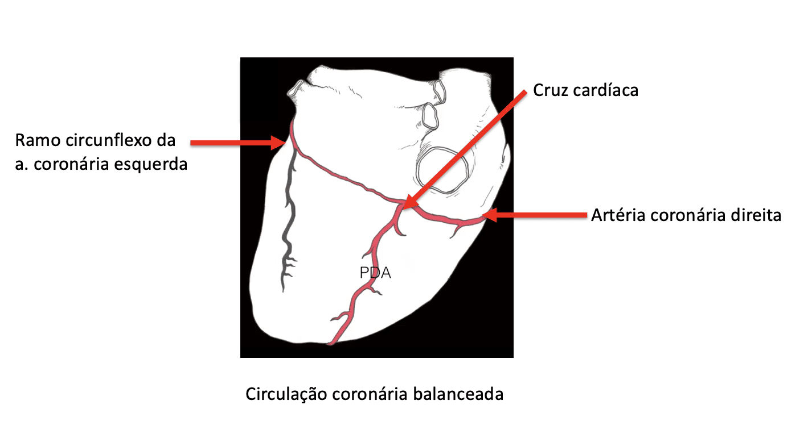

As artérias coronárias são os vasos responsáveis pela chegada de oxigênio e outros nutrientes ao músculo cardíaco (miocárdio).
Esse suprimento é contínuo e deve adaptar-se às exigências do coração, variando se o indivíduo está em repouso ou sob estresse físico (exercício) ou emocional.
As artérias coronárias têm origem na porção inicial da aorta (grande artéria) e são chamadas artéria coronária direita e artéria coronária esquerda (ou tronco da coronária esquerda).
A artéria coronária esquerda, na grande maioria dos casos, é subdividida em dois ramos: a artéria interventricular anterior, e artéria circunflexa, que se subdividem em ramos menores.
A artéria coronária direita também se subdivide em ramos, porém de menor magnitude que os ramos da coronária esquerda.

Em geral, a área do coração pela qual uma artéria passa será a área que ela perfunde.
A artéria coronária direita (ACD) passa à direita do tronco pulmonar e corre ao longo do sulco coronário antes de se ramificar.
A artéria marginal direita surge da ACD e se move ao longo da borda direita e inferior do coração em direção ao ápice.
A ACD continua na superfície posterior do coração, ainda correndo ao longo do sulco coronário.
A artéria interventricular posterior surge então da ACD e segue o sulco interventricular posterior em direção ao ápice do coração.
A artéria coronária esquerda (ACE) passa entre o lado esquerdo do tronco pulmonar e a aurícula esquerda.
A ACE se divide no ramo interventricular anterior e no ramo circunflexo.
O ramo interventricular anterior segue o sulco interventricular anterior em direção ao ápice do coração, onde continua na superfície posterior a anastomose com o ramo interventricular posterior.
O ramo circunflexo segue o sulco coronário para a borda esquerda e para a superfície posterior do coração.
Isso dá origem ao ramo marginal esquerdo, que segue a borda esquerda do coração.

No geral, podemos sintetizar os territórios de irrigação das artérias coronárias:
ACD:
– Átrio direito
– Nó sinoatrial e nó atrioventricular (desta forma, a ACD é denominada de coronária elétrica)
– Parte dos ventrículos direito e esquerdo (face diafragmática)
– Terço posterior do septo interventricular
ACE:
– Átrio esquerdo
– Ventrículo esquerdo e parte do ventrículo direito
– Dois terços anteriores do septo interventricular
O sangue viaja do subendocárdio para as veias da superfície, que são pequenos tributários que percorrem o miocárdio.
Estes, por sua vez, drenam para veias maiores que se esvaziam no seio coronário .
O seio coronário é a principal veia do coração, localizada na superfície posterior do sulco coronário , que corre entre o átrio esquerdo e o ventrículo esquerdo.
O seio coronário é drenado para o átrio direito.
Dentro do átrio direito, a abertura do seio coronário está localizada entre o orifício atrioventricular direito e o orifício da veia cava inferior.
Existem cinco tributárias que drenam para o seio coronário:
Ela se origina no ápice do coração e segue o sulco interventricular anterior até o sulco coronário e ao redor do lado esquerdo do coração para unir-se ao seio coronário.
Isso passa pelo lado direito do coração para se juntar ao seio coronário.
Está localizada na superfície posterior do coração.
As 2 veias cardíacas finais também estão na superfície posterior do coração:

Em cerca de 67% das pessoas a artéria coronária direita é o padrão normal de dominância.
A dominância coronária é determinada pela artéria que origina o ramo arterial localizado no sulco interventricular posterior (ou alcançando a cruz cardíaca – cruz de Has).
Em 26% das pessoas a artéria coronária esquerda alcança a cruz cardíaca e seu ramo circunflexo ocupa o sulco interventricular posterior.
A circulação coronária balanceada ocorre em cerca de 7% da população.
A figura ao lado ilustra a face diafragmática do coração. Nessa face podemos localizar os sulcos: interatrial (azul), interventricular posterior (laranja) e coronário (verde). A intersecção dos sulcos forma a cruz cardíaca (cruz cordis)

A dominância coronária direita é a mais comum. Observe na imagem ao lado que a artéria coronária direita alcançar a cruz cardíaca, emitindo o ramo interventricular posterior.

A dominância coronária esquerda ocorre quando o ramo circunflexo da artéria coronária esquerda alcança a cruz cardíaca, formando o ramo interventricular posterior.

Na circulação balanceada, ramos das artérias coronárias direita e esquerda alcançam a cruz cardíaca.
